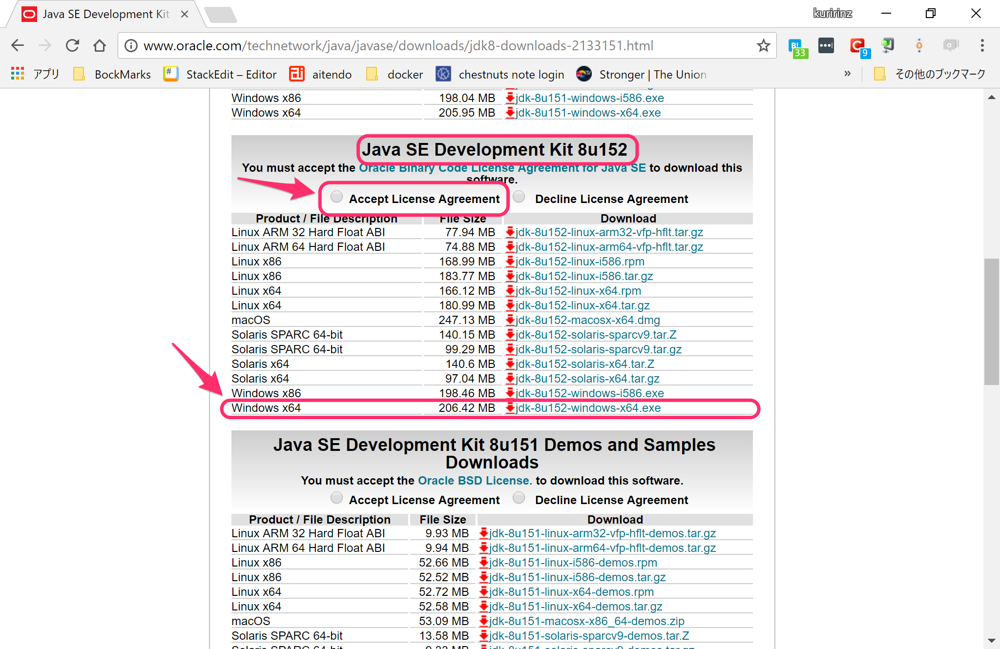
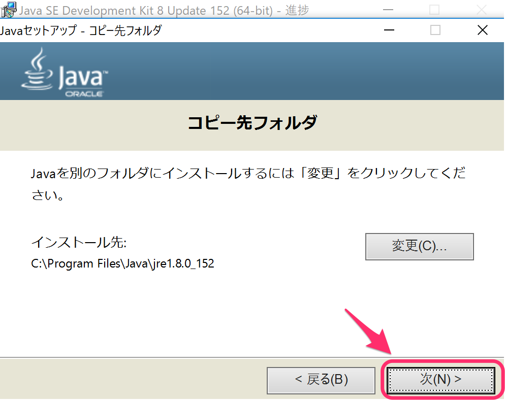

Androidアプリの開発を行うための環境構築をおこないます。
Windows / Mac の各PCごとに手順が違うためそれぞれの環境構築手順を以下に記述します。
環境構築(Windows PC)
Android アプリの開発を始めるには最低限２つソフトウェアのインストールと設定を行う必要があります。
これ以降にwindows OS環境でのAndroid アプリ開発をおこなく準備作業を記載します。
- java(JDK)
- Android Studio
java(JDK)
まずはAndroid アプリの開発を行うためのプログラミング言語javaを実行できるようにする必要があるため、
java(JDK)をインストールします。
JDKのダウンロード
インストールするにはまず、java(JDK)をダウンロードする必要があるため、以下のリンクからjava(JDK)をダウンロードします。
java(JDK)のバージョンとして動作保証がされているjava8系のダウンロードを行います
下記リンクをクリックしJDKダウンロードページにアクセスします。
JDK8 ダウンロードページ
※ 資料作成時の最新版java 8u152バージョンのダウンロード手順で記載していきます。
下図の通りJava SE Development Kit 8u152の項目からAccept License Agreementにチェックを入れ、Windows x64のDownload列のリンクをクリックしてexeファイルをダウンロードします。

JDKのインストール
ダウンロードしたJDKのインストーラを起動してPCにJDKをインストールします。
- ダウンロードしたexeファイルをダブルクリックしインストーラーを起動します。
- 確認ダイアログが表示された場合は、
はいをクリックします。 - JDKのインストール開始画面が表示されたら
次(N) >をクリックし、その後も画面に従いインストールを進めます。 - 開発ツールが選択されていることを確認し、
次(N) >をクリックします - JDKの保存先を設定できます、変更は不要なので
次(N) >をクリックします
 - インストールが始まります、完了して画面が変わるのを待ちます
- インストールの完了画面が表示されたら
閉じる(C)をクリックします
以上でJDKのインストールが完了です。
JDKのインストール 確認
次にコマンドプロンプトを使いJDKが正しくインストールされたことを確認します。
- Windows ホーム画面の左下にある
検索欄にcmdと入力しコマンドプロンプトをクリックし起動します。 - コマンドプロンプトに
java -versionと入力しエンターキーを押します。
以上でjava(JDK)のインストールの確認ができました
Android Studio
最後にAndroid Studioの環境構築を行います。
Android Studioをインストールするため、exeファイルを下記リンクからダウンロードページにアクセスします。
Android Studio ダウンロードページ
※ 資料作成時の最新版は Android Studio 3.0.1
- Android Studio Androidの公式 IDE下にある
Android Studio 3.0.1 FOR WINDOWS...のボタンをクリックしexeファイルをダウンロードします。 - ダウンロードの確認画面が表示されたら利用規約を確認の上、チェックをクリックし、
ANDROID STUDIO FOR WINDOWS ダウンロードをクリックします。 - ダウンロードしたexeファイルをダブルクリックし、Android Studioのインストーラーを起動します。
- 確認ダイアログが表示された場合は
はいをクリックします - インストーラの起動画面が表示されたら
Next >をクリックします - インストールするコンポーネント設定が表示されたら”Android Virtual Device”がチェックされていることを確認し、
Next >をクリックします
- Android Studioの保存先を設定します、変更の必要がなければ
Next >をクリックりします Installをクリックします- インストールの完了を待ちます
- インストールが終わったら
Next >をクリックします Finishをクリックすると、Android Studioが起動します。
引き続き、Android Studioの初回セットアップを行います- Android Studioが起動しAndroid SDK Componentのインストールが開始されます
- Welcom画面が表示されたら
Nextをクリック - Install Type画面ではStandardが選択されていることを確認し
Nextをクリックします - Android Studioのテーマ、色合いを好みで選択し、
Nextをクリックします - 確認画面が表示されたら
Finishをクリックします - Androidアプリの開発に必要なComponentのダウンロードを待ちます
- ダウンロードが終了したら、
Finishをクリックします - Android Studioの起動画面が表示されたら完了です
以上でAndroid Studioのインストール、セットアップ作業は完了です。
Androidアプリの開発環境が整いましたので早速開発に入っていきましょう！